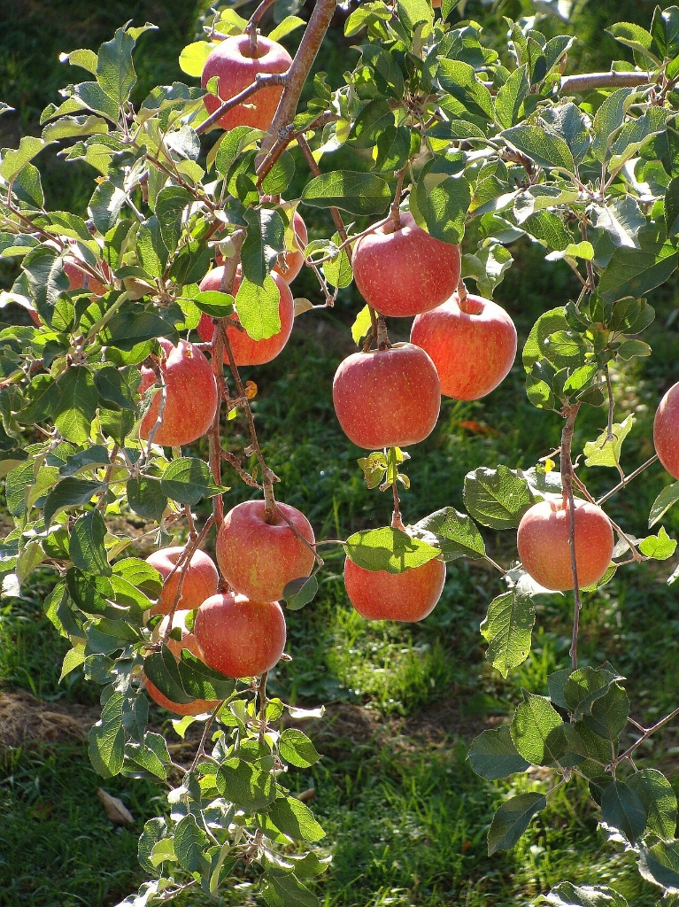
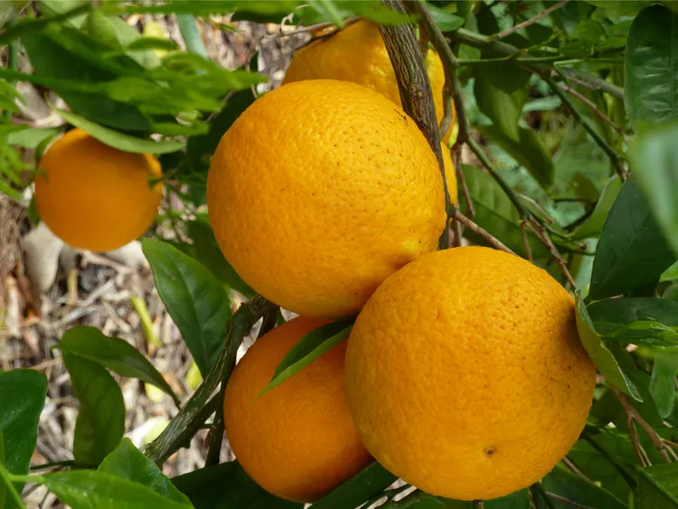
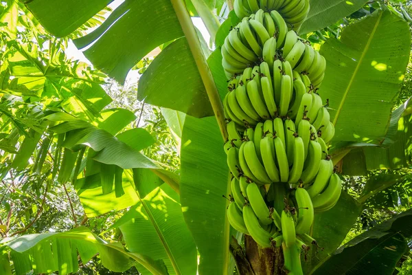

Nuestra selección de frutas frescas ofrece una experiencia directa del campo a tu hogar. Estas frutas se cultivan y cosechan en el punto óptimo de madurez para asegurar su sabor y frescura. Disfruta de una variedad de frutas de temporada que aportan vitaminas y nutrientes esenciales a tu dieta diaria. Perfectas para consumir solas, en ensaladas o como ingrediente principal en postres y smoothies.

Manzanas Fuji
$1,200 CLP por kilo
Stock: 150 kilos
Manzanas Fuji crujientes y dulces, cultivadas en el Valle del Maule. Perfectas para meriendas saludables o como ingrediente en postres. Estas manzanas son conocidas por su textura firme y su sabor equilibrado entre dulce y ácido.

Naranjas Valencia
$1,000 CLP por kilo
Stock: 200 kilos
Jugosas y ricas en vitamina C, estas naranjas Valencia son ideales para zumos frescos y refrescantes. Cultivadas en condiciones climáticas óptimas que aseguran su dulzura y jugosidad.

Plátanos Cavendish
$800 CLP por kilo
Stock: 250 kilos
Plátanos maduros y dulces, perfectos para el desayuno o como snack energético. Estos plátanos son ricos en potasio y vitaminas, ideales para mantener una dieta equilibrada.